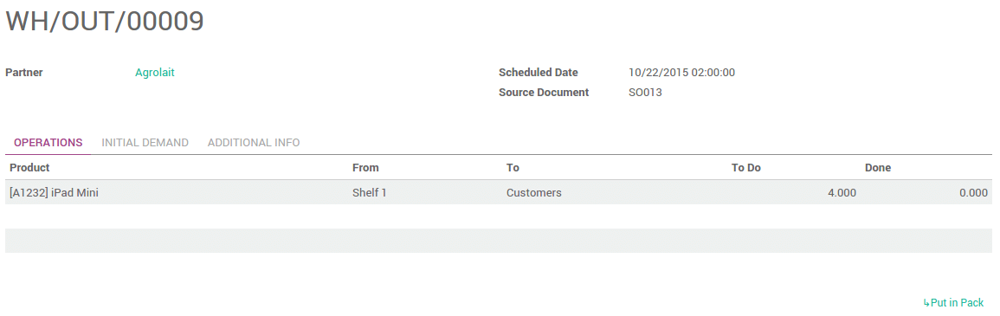
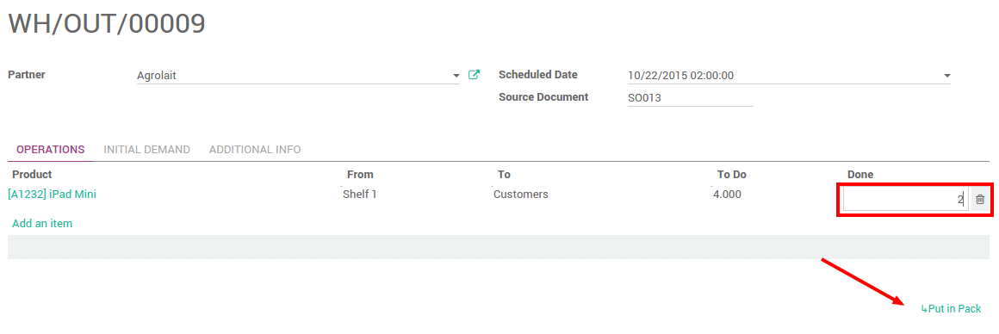
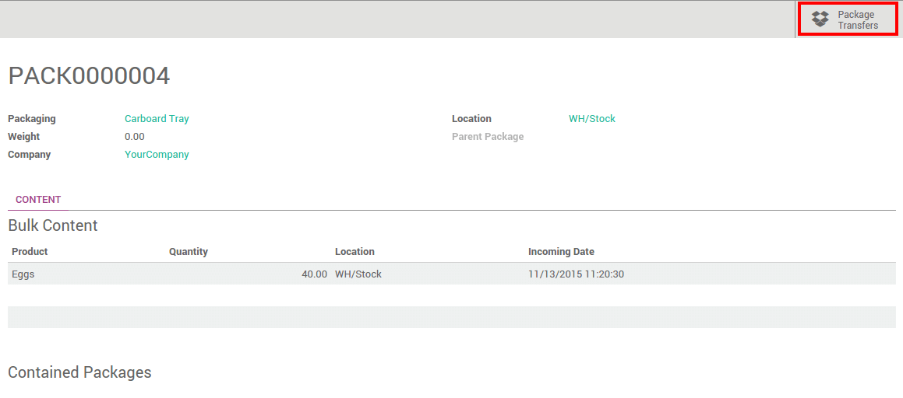

概述
包裹是一个你想在其中放置一个或者几个产品的实际的容器。
默认状态下，YuanCloud不用该功能
一旦你激活了该选项，你就可以在调拨的时候管理一个或者多个包裹。
配置
要陪只如何使用包裹，进入菜单：[UNKNOWN NODE title_reference]。找到**包裹**的位置并选择 记录产品包裹的包材：栈板，盒子，……

一旦完成，点击**应用** 。
打包产品
把产品分包通常在处理仓库调拨时完成(收货，内部调拨或者发货)。
要把产品放进一个包裹，调拨单的状态必须要是**可用**。
在操作页面，你可以把产品放进一个或者多个包裹中。
在**完成**栏位选择你想要放进该包裹的产品的数量，然后点击**放进一个包裹**链接。
它会总动的创建所需数量的包裹。
其余的产品可以按照同样的步骤进行打包。

一旦完成，点击**确认**。
整个包裹的转移
如果有不同的库位和／或仓库，也有可能通过转移包裹来转移产品。
配置
你需要设置**操作类型**为允许调拨包裹。进入：[UNKNOWN NODE problematic]配置 --> 操作类型 [UNKNOWN NODE problematic]。勾选 允许调拨包裹:

调拨包裹
创建一个调拨单。选择源库位和目标库位，然后点击***标记为代办*。在**原始需求**页面不要放置任何内容。

在操作页面，在**要移动的包裹**下面点击**添加新的条目**。
点击**完成**勾选框确认包裹的移动：

When it is finished, click on Validate.
包裹追踪
要追踪一个包裹或者包裹里面的明细，进入：[UNKNOWN NODE title_reference]。
点击**包裹转移**查看所有的调拨。